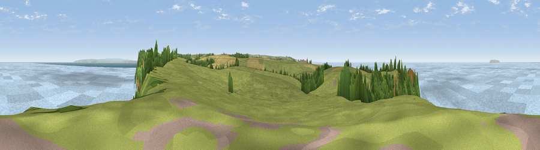

Viewpoint near Hartland
#2477 in England · top 12% of its area beats it · near HartlandWhere it is
The exact computed spot (SS 23762 27625). Click the marker for map links.
The view, rendered

A 360° render of this exact spot computed from the terrain model, tree cover and land cover — summer colours, afternoon light, calibrated against photographs of famous viewpoints. Real trees, hedges and buildings will differ in detail.
The panorama
Grey silhouette: terrain skyline in each direction (720 bearings, Earth curvature and refraction included). Dashed green: skyline with trees (+15 m) and buildings (+8 m) as obstacles. Blue strip: how far the ground is visible on each bearing.
Where the view opens
Wedge length = distance to the farthest visible ground on that bearing (vegetation-aware). Rings at 10, 25 and 50 km.
What fills the view
72% water · 20% grassland · 6% woodland · 2% cropland
Angular shares of the visible panorama (visual magnitude), not map area. Landscape diversity 0.36 (0–1 Shannon).
Key numbers
More beautiful places nearby
The staircase of upgrades: each row has a higher view potential than everything closer. Driving times are estimates from straight-line distance, calibrated against real road routing — check an actual route before setting out.
| Place | Direction | Drive | Score |
|---|---|---|---|
| Viewpoint near Hartland | ESE · 1 km | ~4 min | 77.9 |
| Viewpoint near Hartland | E · 5 km | ~11 min | 80.6 |
| Viewpoint near Clovelly | ESE · 8 km | ~16 min | 81.9 |
| Viewpoint near Clovelly | ESE · 8 km | ~16 min | 83.6 |
| Embury Beacon | SSW · 8 km | ~17 min | 83.8 |
| Viewpoint near Bucks Mills | ESE · 14 km | ~26 min | 84.0 |
| Viewpoint near Woolacombe | NE · 26 km | ~42 min | 84.7 |
| Viewpoint near Crackington Haven | SSW · 35 km | ~53 min | 88.1 |
51.02092, -4.51419 · source: screening · position refined by local search. Computed location — check access rights before visiting.